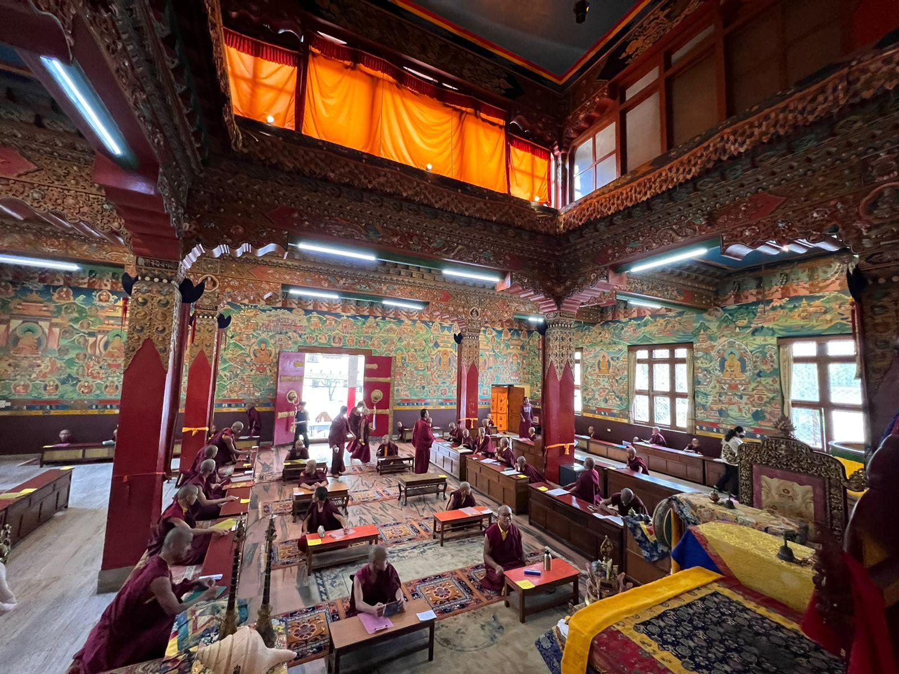
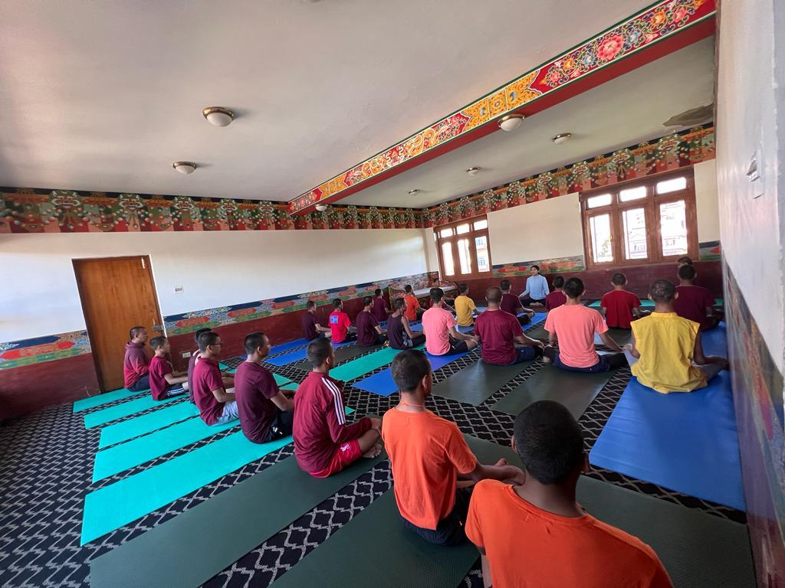
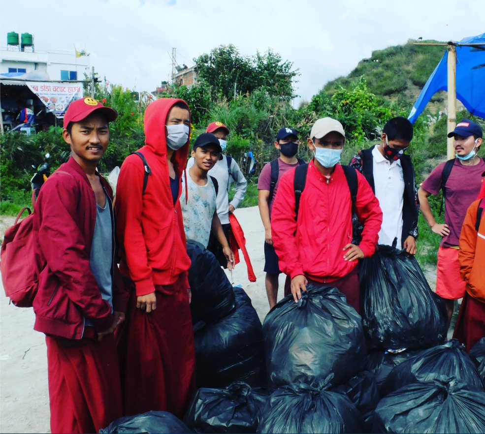
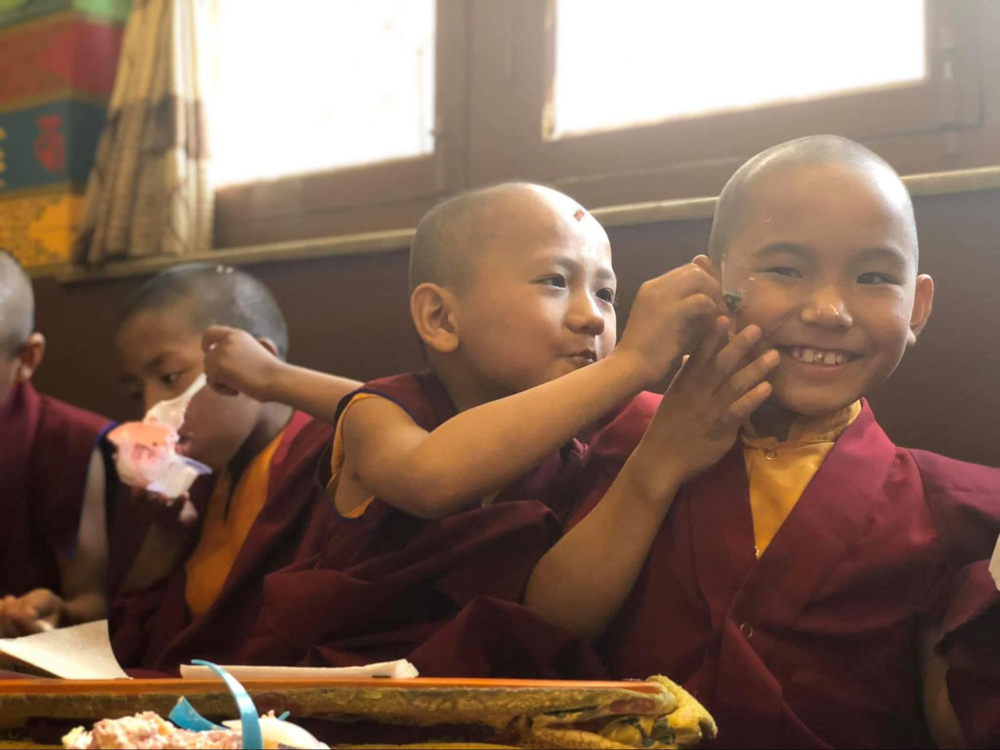

Tharlam employs ten teachers for our sixty-one student monks across eight grades. Three of our teachers are monks themselves and teach Buddhist philosophy and Vajrayana practices; our other seven teachers specialize in modern education subjects such as the sciences, math and languages. The monastery has eight classrooms and a library, and we provide all our students with textbooks, notebooks, pens and penicils.
Founded in 1981 by H.E. Deshung Tulku Rinpoche, Tharlam monastery is a historic monastery of Boudhanath, Kathmandu. While Buddhist philosophy and the practice of the Vajrayana path are central to the education of our sixty-one student monks, the monastery incorporated modern education of the sciences, math and languages to the curriculum in 2015. Through financial and economic difficulties, Tharlam has remained committed to this curriculum and believes it is with both a Buddhist and a modern education that our monks can be of greatest benefit to all sentient beings.
To promote dignity and privacy, Tharlam ensures that bedrooms are not shared by more than two monks aged ten and up – they will all have a home at Tharlam for their wholes lives as monks. In the future we hope to build school building with more classrooms and additional accommodation. In addition to accommodation, the monastery provides our monks with seasonally appropriate robes (thonka sen ngole shentab) three times per year.
Starting in 2022, all our student monks have begin taking yoga lessons five days per week.
Tharlam monastery maintains a small clinic for our monks – which is staffed by a full-time nurse and is equipped to treat minor illnesses and injuries. If any of our monks require more extensive medical treatment, Tharlam covers these fees, as well as those of any medicines.
Beginning in 2022, and at the request of Deshung Rinpoche, Tharlam’s monks have organized garbage cleanups at several locations around the Kathmandu valley – including Boudhanath Stupa. Tharlam and Rinpoche are very proud of the determination shown by our monks towards these cleanups, and we hope to continue this project for years to come.
 Tharlam Academy relies entirely on the kindness and generosity of our benefactors. We are proud, and it is our duty, to provide our monks with houxsing, robes, food, health care and education – the cost of which is NPR 24,000 (USD 200) for each of our sixty-one students per year; NPR 15 Lakh (USD 11,800) total per year.
Without offerings and sponsorships from generous donors, we would be unable to continue; Rinpoche’s vision to provide our monks with both a Buddhist and a modern education, for the greatest benefit to sentient beings, would not be possible. We therefore kindly request for your support of Tharlam Academy – for the benefit of our monks, and for all sentient beings.